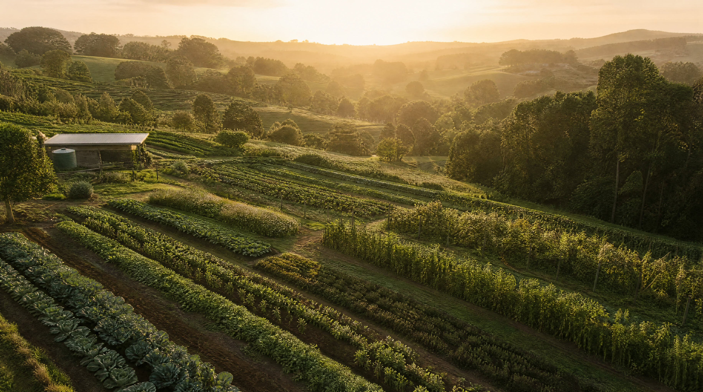
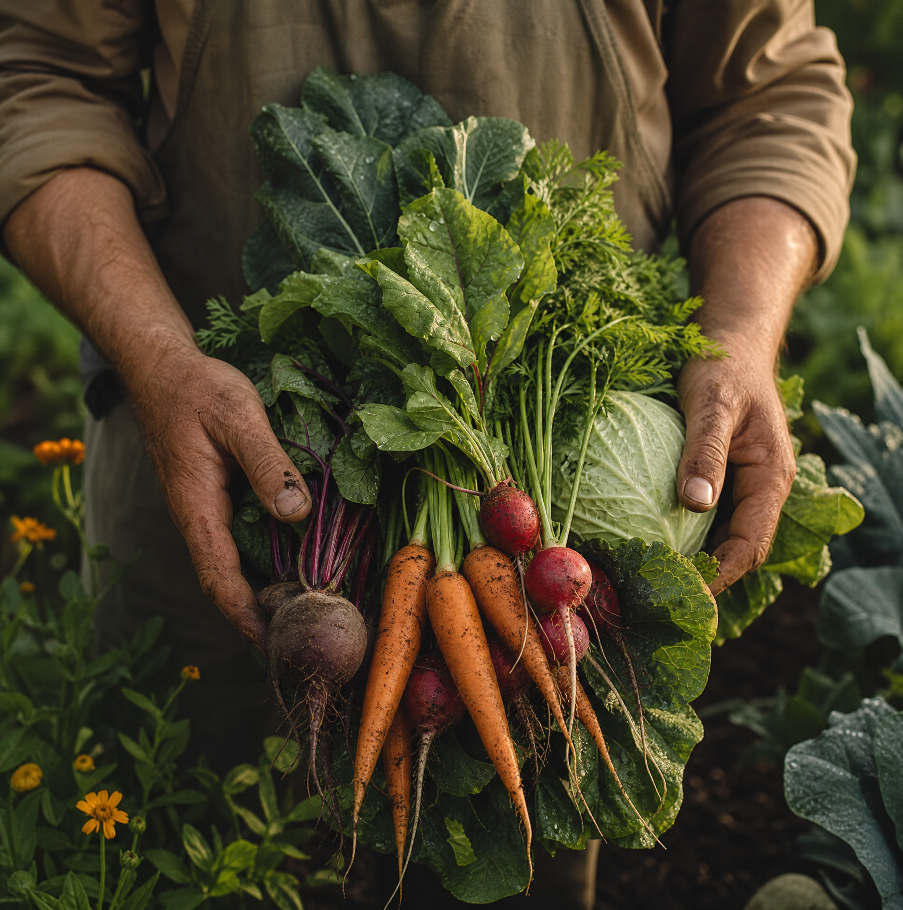
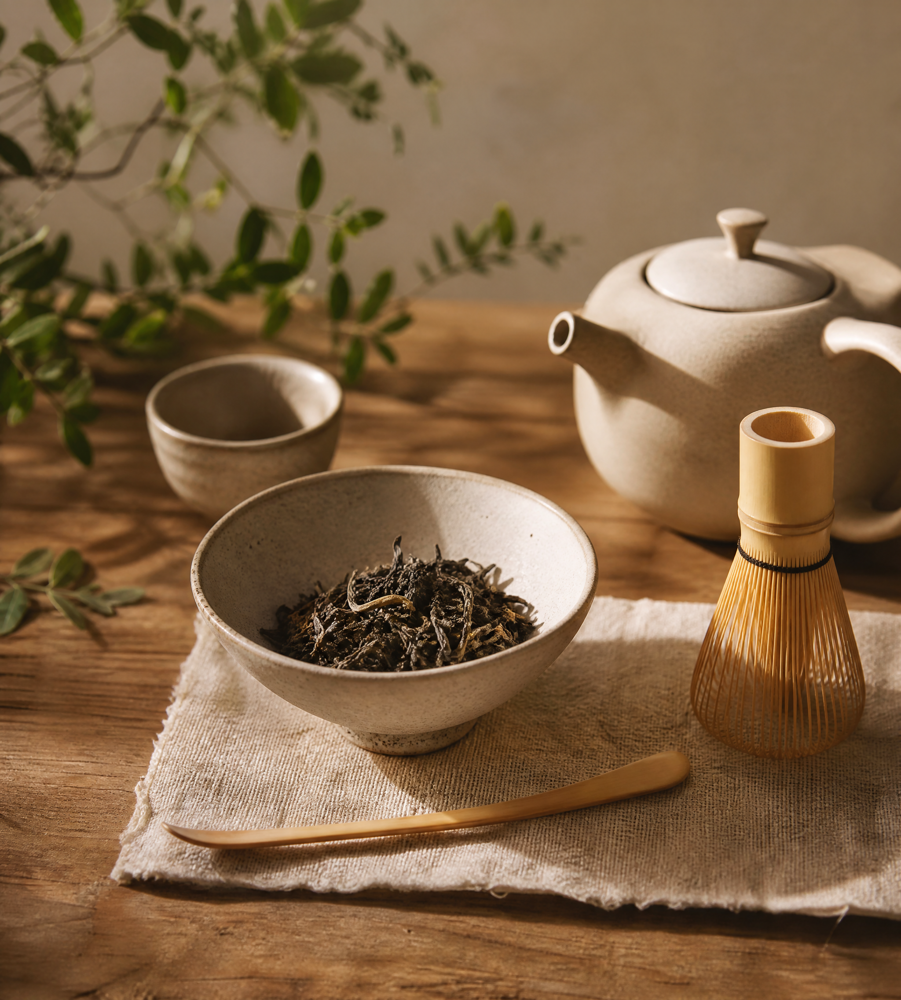
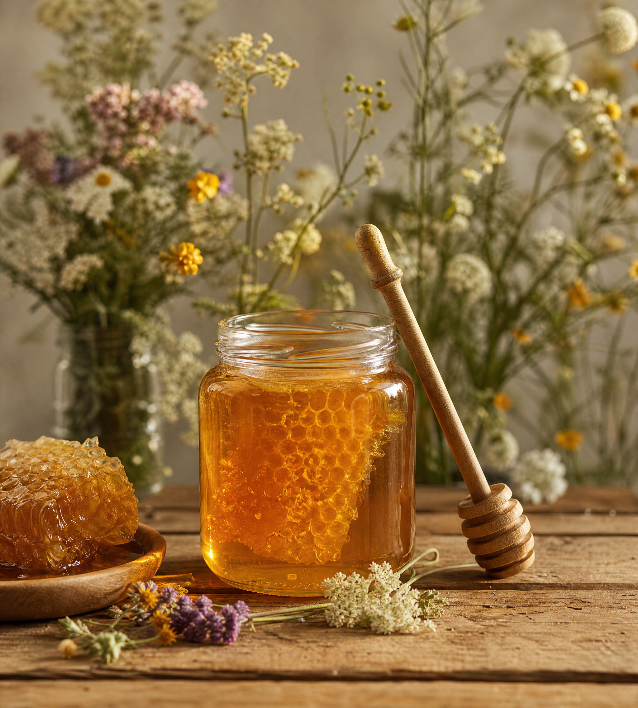
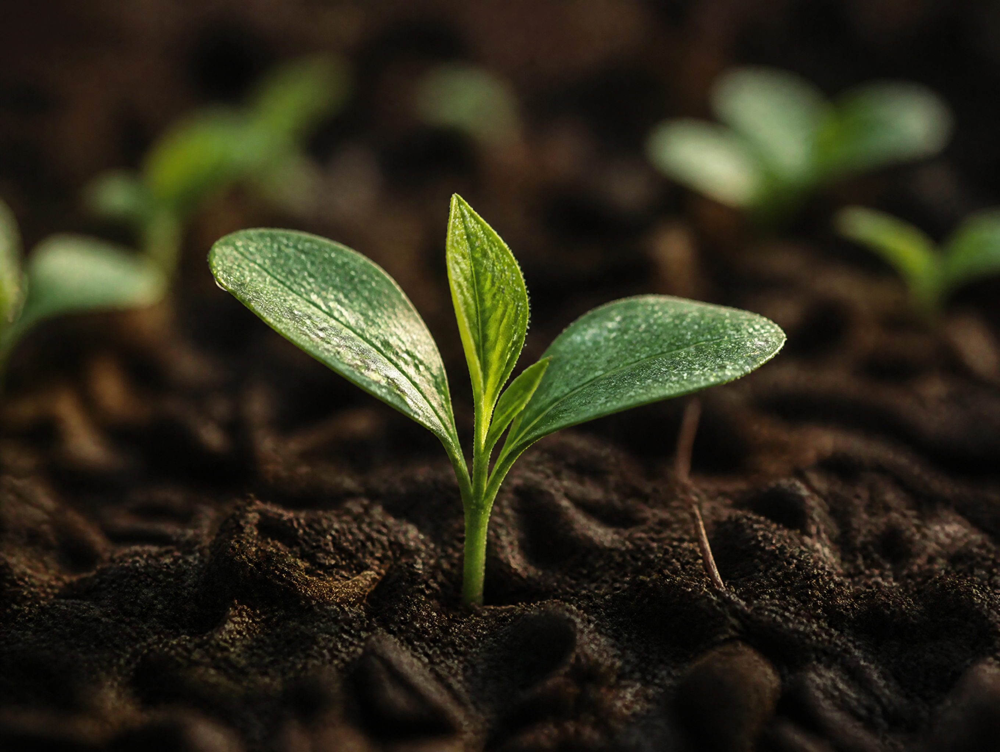
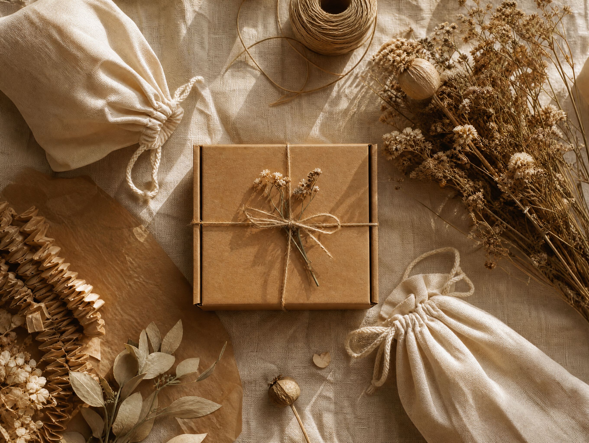
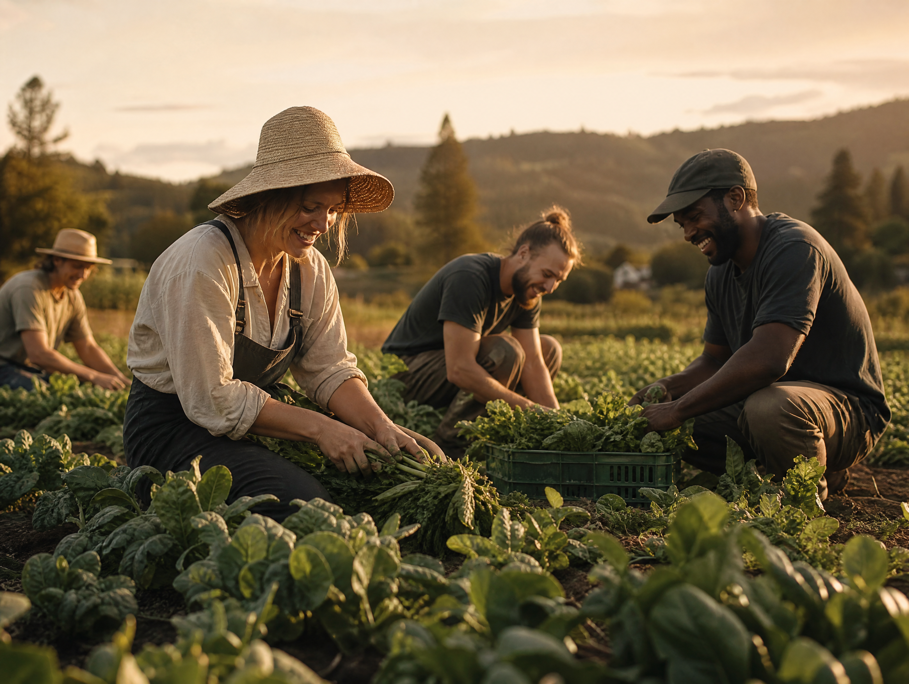
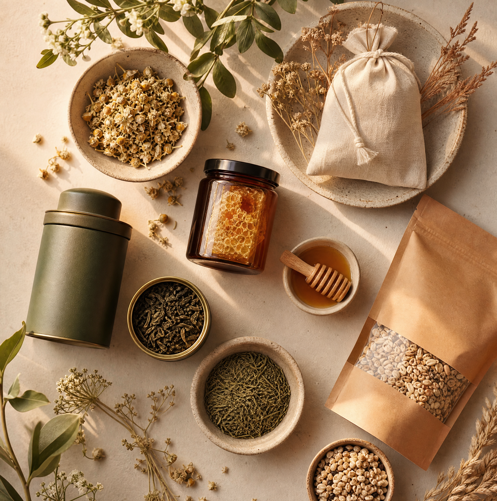
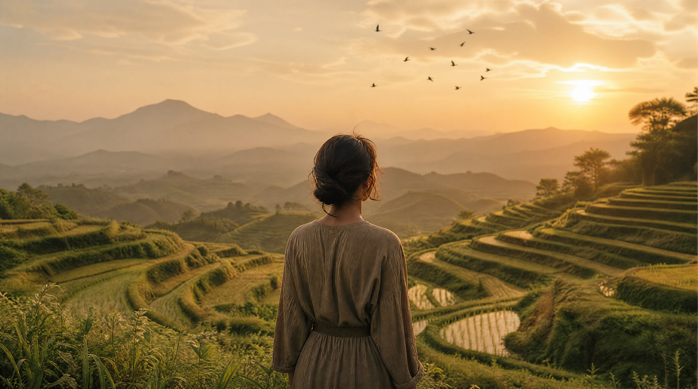

SUSTAINABLE · ORGANIC · NATURAL
从土地到餐桌，从种子到灵魂。我们相信自然的力量，尊重每一片叶子的生长节奏。
01 — Our Story
Verde 诞生于2018年云南大理的一片有机农场。创始人林小禾在城市生活了十五年后，决定回归土地，用最朴素的方式种植、收获、分享。
我们的每一款产品都来自经过认证的有机农场，不使用农药、化肥或转基因种子。因为好的食物不需要添加什么——它本身就是完整的。
8
年深耕
12
合作农场
0
农药


Ancient Tree Tea
云南古树普洱 · 有机认证

Wild Honey
高原野生蜂蜜 · 零添加

ORGANIC
100% 有机认证，拒绝一切化学合成物。让土地自由呼吸，让作物自然生长。

SUSTAINABLE
可降解包装、碳中和物流、公平贸易采购。每一个环节都对地球负责。

COMMUNITY
与在地农户深度合作，保障公平收购价格，支持乡村教育基金。
Carbon Offset
320t
年碳抵消量
Farmers
240+
合作农户家庭
Biodegradable
100%
包装可降解率
02 — Philosophy
— Native American Proverb
这不仅是一句谚语，更是我们每一天的行动准则。从选种到包装，从运输到回收，每一个决定都在回答同一个问题：我们要留给下一代什么样的地球？

03 — Product Line
TEA COLLECTION
古树茶系列
云南古树普洱、安吉白茶、武夷岩茶
HONEY & PRESERVES
蜂蜜与果酱
高原野生蜂蜜、手工柑橘果酱、玫瑰酱
GRAINS & OILS
谷物与油脂
有机糙米、冷榨山茶油、初榨亚麻籽油

04 — JOIN US
加入 Verde 社区，与我们一起守护土地、分享自然的馈赠。
hello@verde-organic.cn
Instagram: @verde_organic
leishifu-verde-organic · v1.0 · 2026